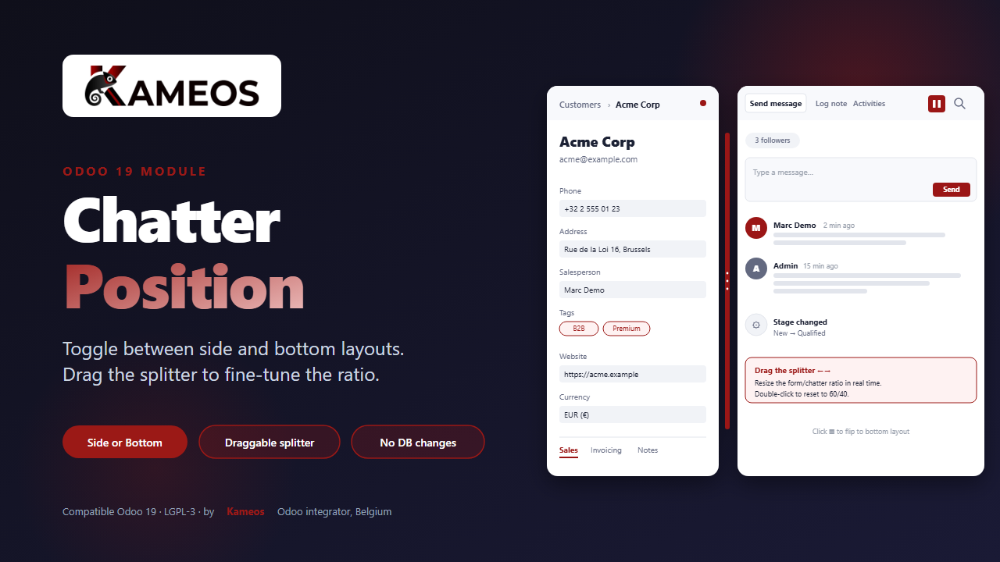

Toggle the Odoo chatter between side and bottom layouts. Drag the splitter to fine-tune the form/chatter ratio.

Chatter Position adds a small toggle button to every chatter topbar that switches the chatter between two layouts: side (form left, chatter right) and bottom (full-width chatter under the form sheet). In side mode, a draggable splitter lets the user resize the form and chatter panes in real time.
By default Odoo chooses the layout for you based on the viewport width: side on very wide screens, bottom otherwise. That breakpoint is fixed and rarely matches what users actually want. This module hands the choice back to the user, on any screen size, with zero database changes.
A small button is injected into every chatter topbar, right next to the search icon. Click it to flip the chatter between side and bottom layouts. The icon updates to reflect the next action.
In side mode, a vertical splitter sits between the form sheet and the chatter. Drag it to resize the panes. The ratio is stored per browser and reused across sessions.
Messed up the layout while dragging? Double-click the splitter to snap back
to a clean 60/40 ratio with a smooth 180 ms transition.
A hard minimum width on the chatter (240 px) keeps Send Message and Log Note on the same row. Secondary buttons wrap to a second row instead of getting hidden behind a horizontal scrollbar.
180 ms transition on toggle and on splitter reset. The drag itself stays instant, frame by frame, for a snappy native feel.
No model, no controller, no XML view, no menu, no migration. Layout choice and
split ratio live in the browser localStorage only. Nothing is sent
to the server.
The module overrides Odoo's o_xxl_form_view breakpoint logic so the
user's choice wins on small laptops, ultra-wide monitors, and everything between.
A chatterPosition service is exposed in the registry so other
modules can read or toggle the layout programmatically without touching the
DOM directly.
60/40.
The choice and the ratio are stored in localStorage under the keys
chatter_position and chatter_split_ratio. Clearing site data
resets the preferences to default (side, 60/40).
The module exposes a public service registered as chatterPosition. Any OWL component can read the current layout or toggle it programmatically:
/** @odoo-module **/
import { Component } from "@odoo/owl";
import { useService } from "@web/core/utils/hooks";
class MyComponent extends Component {
setup() {
this.chatterPosition = useService("chatterPosition");
}
isSided() {
return this.chatterPosition.getPosition() === "sided";
}
flip() {
this.chatterPosition.toggle();
}
}The module patches FormController and FormRenderer to override Odoo's native layout choice. No models, no controllers, no migrations — everything lives in static/src/js/chatter_position.js and static/src/css/chatter_position.css.
| Compatibility | Odoo 19 Community and Enterprise |
| Dependencies | mail, web |
| License | LGPL-3 |
| Database footprint | None — no model, no controller, no XML view, no menu, no migration |
| Persistence |
Browser localStorage keys
chatter_position and chatter_split_ratio
|
| Public service | chatterPosition — getPosition(), toggle() |
| Frontend | Patches on FormController and FormRenderer, plain CSS, OWL service registration |
Chatter Position is built and maintained by Kameos, an Odoo integrator based in Belgium. We work with SMEs and non-profits on Odoo Enterprise integrations, custom module development, and Flutter mobile apps connected to Odoo.
Found a bug or missing a feature? Send us a message — we usually reply within one business day.